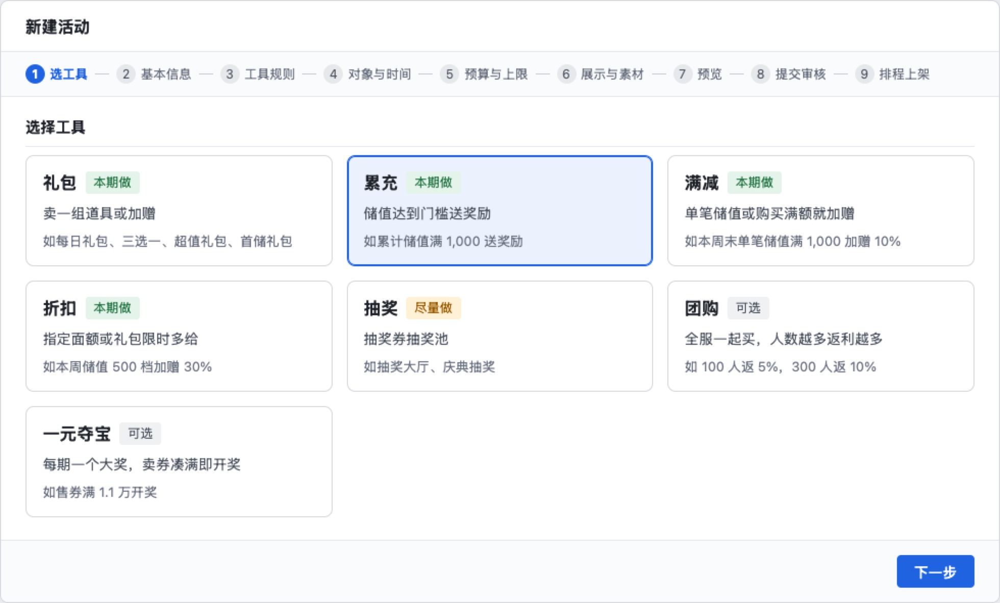
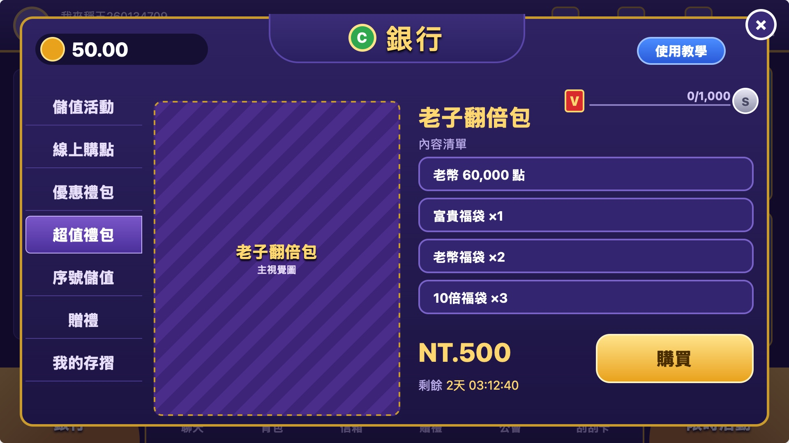
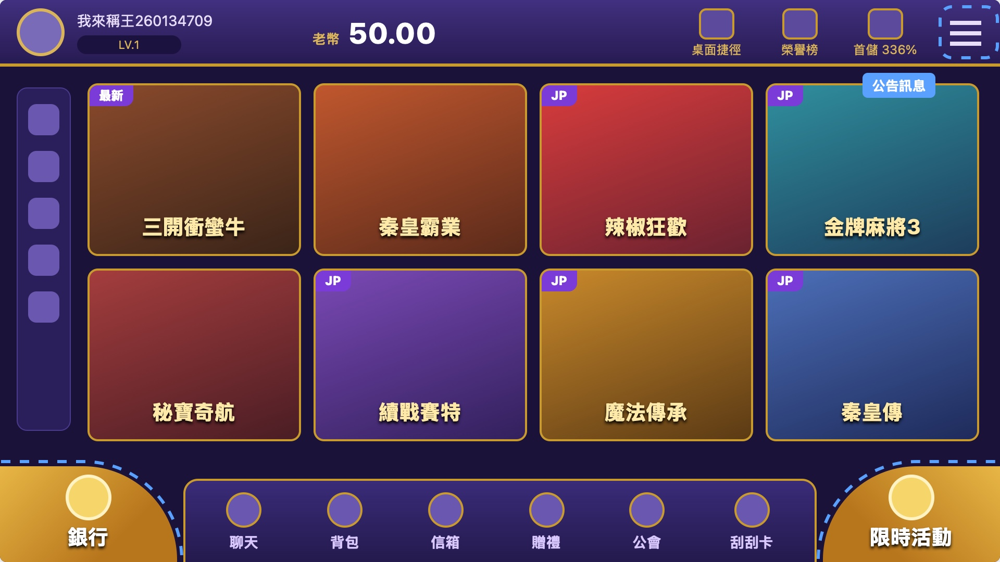
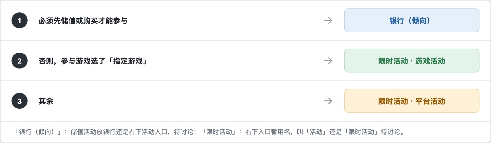

活动配置项目（需求名「入口调整」）· 本期能解决什么、解决不了什么 · 2026-10-28
本期能解决礼包、日常储值活动和三个入口的分工；节庆最多解决一部分，跨活动的改动解决不了
一现在的问题
① 活动上线
上活动要排开发，同样的内容反复开发
- 过去一年储值、商城类开发需求 148 个，其中 52 个是重复开发，都动用了客户端、服务器、后台或网页开发。
- 节庆每次重做，22 个：10 月庆典（8/17 开单）和 16 周年庆（9/10 开单）各做了一遍同样 6 块：活动大页、抽奖大厅、储值优惠页、人数活动、导航弹窗、大厅换装。10 月庆典的活动大页还开了 14 张问题单，多是活动时间写错、错字漏字。
- 礼包每出一个新包重做，12 个：超值礼包每出一个包，就要美术、网页、策划、测试单独做一页；去年 9 月到今年 6 月做了 9 次。
- 一个改动要在各活动各改一遍，18 个：新增「至尊卡」等级后，礼包、转盘、补给站、抽奖大厅、排行榜等各开一单，共 12 个。
Jira 开发需求单（2025-11-01 至 2026-10-26 创建），按标题归类后逐个核对子任务
② 大厅入口
好康、限时活动、公告都在放活动，用途重叠
- 三处都放活动：好康放排行榜、外赠、十月庆典、抽奖大厅等；限时活动放活动图标；公告里的「最新活动」放活动大图（如老子翻倍包）。
- 同一个活动挂多处、每处各配一次：「祈福财神庙」同时挂在限时活动、好康、推播、快显、热门资讯、游戏内悬浮、背包 7 处。
- 新活动挂不上入口：入口的链接选项是固定清单，新活动要研发补进去。例：「至尊回归」上线时，限时活动、大厅弹窗、好康三处都选不到它。
产品 idea 页原话「好康/限時/公告 功能重疊」；好康改版草案（2025-12）原话「同一活動於多個位置重複展示，資訊冗餘」；客户端截图；缺陷单
二原因
① 活动上线
没有通用模板，每个活动、每种玩法单独做
- 每种玩法一套后台：扭蛋机、每日补给、红包夺宝、抽奖大厅各有自己的后台菜单和需求文档，规则不能互相复用。
- 后台只能配礼包内容：「储值活动设定」能配五类礼包，但每个礼包的活动页、新的礼包类型仍要开发。
- 活动时间画在图上：宣传图里的时间靠美术手改，容易写错。
- 卡别等设置每个活动各写一份：所以加一个卡别，要每个活动各改一遍。
各玩法的后台需求页；礼包后台需求页；好康统一改版需求单（仍在待办）
② 大厅入口
三个入口没定清楚各管什么，各有一套后台
- 用途走偏：好康原定承载活动和功能，产品评估原话「淪為活動展示」。
- 三套后台互不相通：好康在「好康设置」，限时活动在「大厅限时活动入口」，公告在「公告管理」；连活动标签都是三套。
- 入口选项写死：要挂哪个活动，得先由研发把它加进选项清单。
产品 idea 页；入口后台需求页与相关需求单
三怎么解决
① 活动上线：做活动配置后台
对应原因：没有通用模板
常用玩法做成工具，运营按九步配好就上线
新建活动先选工具（礼包、累充、满减、折扣、抽奖、团购、一元夺宝），再填基本信息、规则、对象与时间、预算、展示素材，预览后交另一人审核，到点自动上架。下次复制上期，改时间即可。

对应原因：礼包活动页每包要开发
每类活动一个固定版式，新包只换图和内容
超值礼包用统一详情页：主视觉图、内容清单、价格、购买按钮、剩余时间。上新包只上传主图、填内容，不再做网页。

对应原因：活动时间画在图上
时间、档位、奖励由系统按配置显示
美术只出主视觉图，图上不写时间和规则，改时间不用改图。
对应原因：卡别等设置各写一份
对象、卡别、排除名单所有新活动共用一套
以后加一个卡别，新后台里的活动改一处就行。各玩法自己的后台不在内。
② 大厅入口：三个入口各管一件事
对应原因：用途没定清楚
花钱去银行，玩活动去限时活动，看消息去公告
银行搬到左下原好康的位置；限时活动在右下，分游戏活动、平台活动；公告从右上菜单进，分官方、活动、其他。

对应原因：三套后台各配一次
活动配一次，系统自动决定进哪个入口
要先储值或购买才能参加的进银行；指定了游戏的进限时活动的「游戏活动」；其余进「平台活动」。运营不用再到各入口后台分别配。

对应原因：入口选项写死
活动配好，自动出现在各处的可选列表里
入口、Banner、大厅弹窗、推播、公告选跳转目标时，新活动自动在列表里，不用研发补。
每个入口和每种工具的完整界面与规则：需求评审材料（17 页）
四本期能解决哪些
| 问题 | 本期 | 为什么 |
|---|
| ① 活动上线 |
| 礼包每出新包重做（12 个） | 能解决 | 礼包做成模板，超值礼包用统一的详情页，不再每包做一页。12 是上限：换图仍要美术，全新的礼包类型仍要开发。 |
| 日常储值活动要排开发 | 能解决 | 累计储值送奖励、单笔满额加赠、限时加赠做成模板；运营复制上期、改时间和档位，审核后上线。 |
| 节庆每次重做（22 个） | 最多一部分 | 活动大页可由「节庆活动汇总页」替代、抽奖大厅可由「抽奖模板」替代，但这两项排在「有时间才做」。人数活动、大厅换装不在本项目；抽奖每次出新规则仍要开发（两次庆典的抽奖规则就不同）。 |
| 一个改动各活动各改（18 个） | 解决不了 | 这些改动落在扭蛋机、转盘、补给站、抽奖大厅、排行榜等玩法自己的后台，本项目不改这些后台。 |
| 全新玩法 | 解决不了 | 模板只能复用已有玩法，没有的玩法仍要开发。 |
| ② 大厅入口 |
| 三个入口用途重叠 | 能解决 | 银行（搬到左下原好康位置）管花钱；限时活动管免费活动，分游戏、平台；公告只放消息，分官方、活动、其他。 |
| 新活动要研发补选项 | 能解决 | 用新后台配的活动，配好就自动出现在入口和各模块的选项里。 |
| 现有玩法挂入口 | 看研发时间 | 扭蛋机、红包夺宝等接进新入口排在「有时间才做」；做不了，就仍在旧后台挂。 |
| 同一活动在多处各配一次 | 部分 | Banner、公告：自动生成排在「有时间才做」。大厅弹窗、推播：归推送后台管，投放规则仍要在那边单独配，解决不了。 |
五结论
能解决 ≤12
节庆 22 · 最多一部分
解决不了 18
过去一年 52 个重复开发，按本期能不能解决分
能解决的：礼包和日常储值活动不用再开发；三个入口用途分清，新活动不用研发补选项。
解决不了的：跨活动的改动、全新玩法、节庆的人数活动和换装仍要开发；弹窗、推播仍在推送后台另配。
需要你：找研发评估工作量。「有时间才做」的几项（节庆汇总页、抽奖、现有玩法接入、自动生成）能不能做进本期，看这个结果。